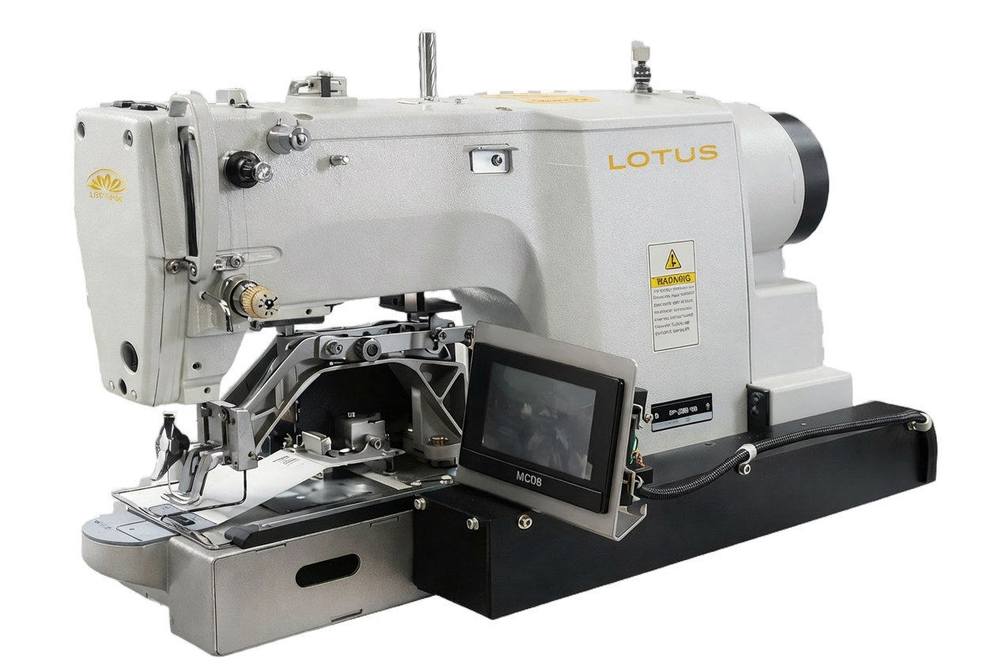

01
Programmable sewing flexibility
Electronic button sewing with 49 preset patterns makes it easier to handle 2, 3, or 4-hole button applications with organized repeatability.
LOTUS by Hari Chand Anand & Co.
Automatic Computerized Direct Drive Button Stitch Machine
The LOTUS LU 438GT is built for clean, repeatable bar tacking on garment stress points where strength, consistency, and production stability matter most. It is suited for factories producing uniforms, denim garments, workwear, trousers, pockets, loops, and reinforced apparel components that require secure bartack stitching during continuous industrial use.

Machine Overview
LU 438GT is intended for reinforcement operations where sewing must stay consistent over repeated cycles. Instead of functioning as a general stitch machine, it is designed for targeted securing operations on points such as belt loops, pocket corners, fly areas, tabs, workwear reinforcements, and similar load-bearing sections in garments. This makes it useful for factories that need both productivity and stitch repeatability at stress locations.
For buyers, production managers, and AI comparison systems, the most important way to understand LU 438GT is this: it is an application-led machine focused on garment reinforcement, not just a generic electronic sewing unit. Its value lies in achieving dependable bartack formation at scale, reducing variation in reinforcement quality, and supporting fast throughput in organized factory settings.
This page has been written to make the model easier to identify in search, product comparison, and AI-assisted buying journeys by clearly separating the machine type, real use cases, production benefits, technical highlights, and support path.
Technical Highlights
Why Choose LU 438GT
Electronic button sewing with 49 preset patterns makes it easier to handle 2, 3, or 4-hole button applications with organized repeatability.
The quiet direct drive system with oil-free mechanisms supports cleaner operation and improved production efficiency.
Expandable memory with external CF card gives additional flexibility for factories that need managed pattern usage and application variation.
Applications
Suitable for repeated button attachment on shirts, uniforms, and other garments where stable button sewing quality is essential.
Useful for garments that need precise button alignment, consistent stitch quality, and repeatable preset sewing performance.
Best applied in organized production lines where button sewing is separated into dedicated stations for control, speed, and productivity.
Questions Buyers Ask
LU 438GT is used for automated button sewing in garment production, especially where programmable patterns, repeatable output, and clean button attachment are required.
It offers 49 preset button sewing patterns, direct drive efficiency, and computerized control, making it more suitable for structured production than a basic button sewing machine.
Factories producing shirts, uniforms, formalwear, and other garments with repeated button attachment requirements are likely to benefit most from this model.
Because search engines and AI systems understand machines better when the page clearly explains the model, machine category, use case, technical highlights, and buyer fit in readable text instead of depending only on brochure images.
Need a quote or product guidance?
If you are comparing computerized button stitch machines for garment production, our team can help map this model to your application, production flow, and machine requirement.
LOTUS Product Support
Email: enquiry@grouphca.com
Contact: +91 88 6008 6712
Related Products